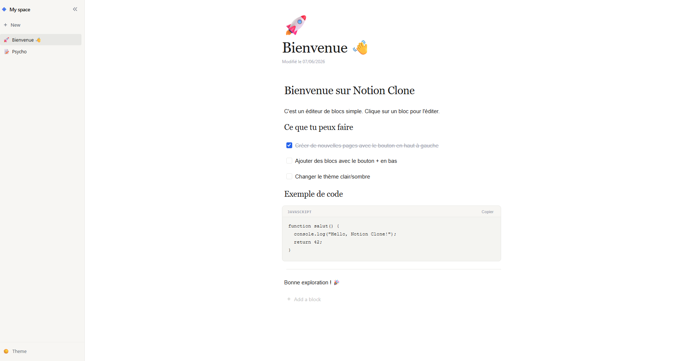

[ Engineering ]
Notion Copy
Highlights 2025

[ Engineering ]
Highlights 2025
[ Photographie ]
Costa Rica, 2025
[ Open source ]
TypeScript · 2k★
[ UI / Produit ]
Site & identité
[ Voyage ]
Provence, été 25
[ Engineering ]
Cloudflare Workers
[ Photographie ]
Portraits 2024
[ UI / Produit ]
Internal tool